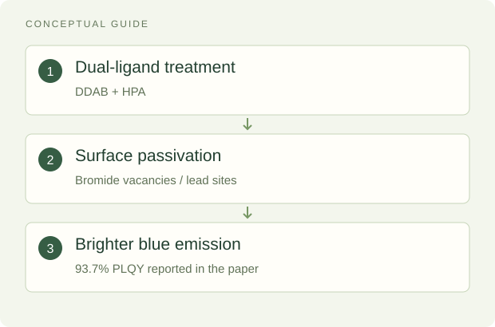
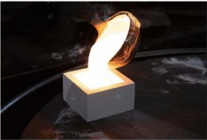
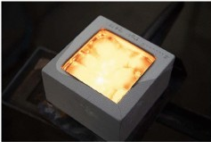
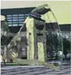
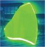
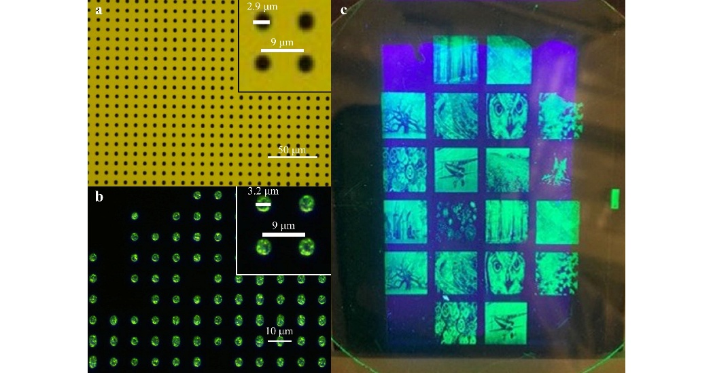
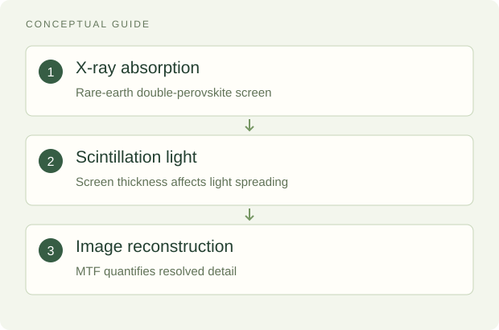
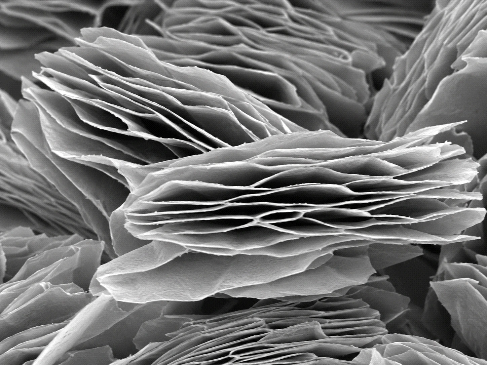
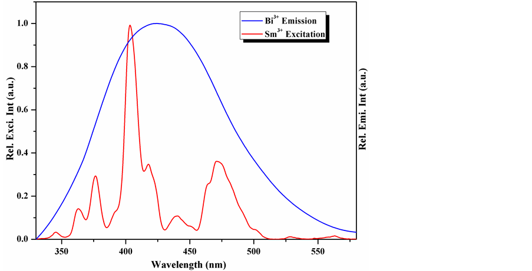

Two ligands. Fewer surface losses.
Complementary surface chemistry can make blue perovskite emission both brighter and more stable.
Read the story
Naresh Varnakavi, Ph.D.
Research Scientist
MATERIALS SCIENCE · NANOMATERIALS · PHOTONICS
I’m Naresh, a research scientist exploring how composition, structure, and surfaces shape material performance—from optical glasses and polymers to perovskites, scintillators, and MXenes.
Based in Philadelphia, Pennsylvania

MELT → MOULD
HOT GLASS
DAYLIGHT
UNDER UVFrom a molten host to UV-excited luminescence.

QUANTUM-DOT MICRO-PATTERNSNanoscale structure. Colorful optical response.

X-RAYS → LIGHT → IMAGEConvert invisible radiation into visible detail.

SEM · LAYERED MORPHOLOGYSelective chemistry opens layered structures.
Glass preparation: Figure 5a,b excerpts from Giesecke & Dillenburger, Glass Structures & Engineering 7, 231–251 (2022). Daylight and UV glass-ceramic photographs: Figure 2E,F insets from Jia et al., Advanced Science 11, 2309433 (2024). Both are CC BY 4.0; panels are cropped for this layout. These representative photographs come from separate studies.
Quantum-dot micropatterns: selected panels from Velpugonda, Varnakavi, Yerich & Lin, Light: Advanced Manufacturing 6, 15 (2025), CC BY 4.0; cropped for display. X-ray process graphic: original conceptual schematic. SEM: From my own work on MAX phases and MXenes; layered morphology alone does not establish phase purity.
Experimental depth.
Evidence-led development.
01 / RESEARCH THEMES
My work explores how composition, processing, interfaces, and dopant interactions control optical and functional properties.
Rare-earth and transition-metal doping; visible–NIR luminescence, quenching, dielectric response, and conductivity.
17 journal articles 02 / Polymers & CompositesIon-containing PVP films and polymer-encapsulated perovskites; connecting transport, protection, and optical response.
3 journal articles 03 / Crystals & PhosphorsDopant environments, luminescence, microcrystals, and the relationship between crystal structure and function.
7 journal articles 04 / X-ray ScintillatorsLead-free double perovskites and dual-phase emitters for sensitive detection and high-resolution imaging.
3 journal articles 05 / Perovskite NanomaterialsQuantum dots, nanoplatelets, compositional engineering, surface passivation, and heterogeneous architectures.
12 journal articles 06 / MAX Phases & MXenesMAX-phase synthesis, selective chemical processing, nitrogen retention, phase formation, and verification.
1 journal articles02 / RESEARCH IN FOCUS
Short explanations of the science, with conceptual guides and links to the published evidence.

Complementary surface chemistry can make blue perovskite emission both brighter and more stable.
Read the storyScreen geometry matters alongside the chemistry of the emitter.
Read the story
Selecting a compatible dopant pair can redirect excitation energy within an optical glass.
Read the story03 / TECHNICAL EXPERTISE
I bring synthesis and characterization together to understand what changed, why it changed, and which experiment to run next.
Colloidal nanocrystals, sol-gel and co-precipitation methods, high-temperature solid-state and molten-salt synthesis, surface passivation, and encapsulation.
Explore synthesis methods ↗Spin coating, blade coating, drop casting, silica and polymer composites, rare-earth-doped optical materials, perovskites, MAX phases, and MXenes.
XRD, FTIR, Raman, UV–vis–NIR absorption, PL/PLE, PLQY, lifetime/TRPL, transient absorption, X-ray-excited luminescence/imaging/detection, XPS, SEM/EDS, TEM/HRTEM, ICP-MS/OES, AFM, profilometry, thermal, dielectric, electrical, and magnetic analysis.
Composition–processing studies, synthesis troubleshooting, reproducibility investigations, structure–property analysis, SOPs, hazard assessment, and researcher training.
CHARACTERIZATION TECHNIQUES
Explore 19 techniques and measurement families through clear principle diagrams—from XRD and electron microscopy to optical dynamics, X-ray scintillation, ICP-MS/OES, and physical properties.
Collaborative photonics experienceContributed to high-resolution micro-patterning of solution-processed materials and exciton-polariton metasurface research, including a co-invented U.S. provisional patent application.
04 / EXPERIENCE
Experimental materials research spanning the United States, South Korea, and China.
Read the full CVPhotonics & Glass Materials
Sri Venkateswara University, 2014
NOV 2025 — PRESENT
Research Scientist · Philadelphia, USA
MAX phases, MXenes, high-temperature synthesis, selective chemical processing, and phase reproducibility.
JAN 2024 — OCT 2025
Research Scientist · Seattle, USA
Perovskite surface chemistry and optical performance; collaborative micro-patterning and photonic metasurface studies. Chemical Hygiene Officer for the Photonics Laboratory.
SEP 2018 — DEC 2023
Postdoctoral Researcher · Seoul, South Korea
Nanocrystal composition engineering, composite films, encapsulation, and lead-free X-ray scintillators.
JUL 2016 — JUN 2018
Postdoctoral Researcher · Fuzhou, China
Functional inorganic materials and structural chemistry.
JAN 2015 — FEB 2016
Postdoctoral Researcher · Gwangju, South Korea
Rare-earth-doped optical glasses, energy transfer, optical-fiber microspheres, and tapered nanofibers.
05 / ACHIEVEMENTS
Research contributions recognized through invention, scholarly impact, and research fellowships.
INVENTION / 2025
Critically Coupled Self-Hybridized Exciton-Polariton Metasurface
Co-inventor on a University of Washington application in exciton–polariton metasurface photonics.
SCHOLARLY RECOGNITION / 2023
Sensors · MDPI
For the review “A Review on Biosensors and Recent Development of Nanostructured Materials-Enabled Biosensors,” co-authored with Nohyun Lee.
Published in Sensors (2021), 21(4), 1109. Recognized in 2023.
Read the award-winning reviewRESEARCH FELLOWSHIPS / 2010–2014
University Grants Commission · India
UGC Basic Scientific Research fellowships during doctoral research in physics and photonic glass materials.
View awards & honors in CV06 / LET’S CONNECT
I welcome conversations about scientific collaboration, functional materials development, and research scientist opportunities.